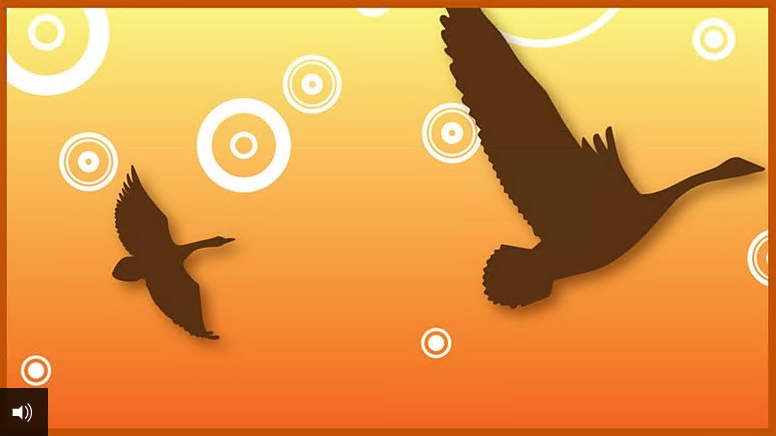

The Wild Swans

Audio Transcript
In a far away land lived a king who had eleven sons and a daughter called Eliza.Bright and quick to learn, Eliza and her brothers worked hard at school, writing with diamond pencils on pages of gold. Life was peaceful and happy. Until one day, everything changed. The castle bells rang out, for the King was getting married to a new wife. ‘My dears, do have some wedding cake,’ said the new Queen with a horrid smile. But the children’s plates were covered not with cake, but sand.
From that moment, Eliza and her brothers knew that the Queen was wicked – and wanted to get rid of them.Just one week later, the Queen sent Eliza to live with a poor peasant and his wife. As for the brothers, she told such dreadful lies about them that the King decided they must leave the castle at once.
‘You are doomed to spend the rest of your lives as great, ugly, silent birds!’ cried the Queen. ‘Now fly away and be gone with you!’But the brothers were too good for the Queen’s spell to work completely. Instead, they turned into beautiful wild swans. With a great cry, they flew out through the windows of the castle and out of sight.
Eliza missed her brothers very much. The King was fond of his daughter, so on her fifteenth birthday she was allowed to return home.
But when the jealous Queen saw how beautiful Eliza had become, she hatched a plan to get rid of her for good. Grabbing a large black bottle, she rubbed a slimy, smelly, green ointment all over Eliza’s face and hair. ‘Pooh! Who is this ugly creature?’ asked the King. ‘She’s certainly not my beautiful daughter.’
As everyone slept, Eliza crept away from the castle. All night she walked and cried for her brothers. ‘I will find them, even though I have no idea where to start looking,’ she thought as she carried on through the darkness.
The next day, Eliza came to a great forest. Sunbeams trickled through the branches high above her head and glanced through the leaves like a golden mist.
After a while, she saw a lake with golden sands just ahead. The water was so clear that every leaf on the trees above was reflected in it. When Eliza saw her green face and hair, she jumped with shock…but as she washed the ointment away, the beautiful King’s daughter looked back at her once more.
Eliza carried on walking through the trees. By now she had reached the gloomiest, deepest part of the forest. It was getting dark – and it was so still she could hear the sound of her footsteps and the rustling of every withered leaf she crushed under her feet.
Eliza jumped as she heard a twig crack. Someone – or something - was close by. Her heart was pounding. Whatever it was, it was coming closer… Out of the gloom loomed a dark figure wearing a hooded cloak. ‘I hope I didn’t scare you, my dear!’ said the voice of a kindly sounding old woman. ‘I’ve been collecting berries – would you like to eat some?’ ‘Yes please,’ replied Eliza with relief. ‘But tell me, have you seen eleven princes riding through this forest?’
‘I haven’t,’ replied the old woman. ‘But yesterday I saw eleven swans with gold crowns on their heads. They were swimming on a river close by. If you follow it, perhaps you will find them.’
Eliza thanked the old woman and set off along the bank of the river until it flowed into the deep wide ocean.
There wasn’t a boat or a sail in sight. ‘Now where do I go?’ she sighed as she looked along the empty beach. Suddenly, Eliza spotted eleven white swan feathers lying on a bed of seaweed. She glanced towards the setting sun. Eleven white swans with golden crowns on their heads were flying towards her – one behind the other, like a long white ribbon. Eliza hid and watched as the swans landed and flapped their great wings. As the sun disappeared over the horizon, the swans’ feathers fell off – and her eleven brothers stood in their place.
Eliza was overjoyed she had found her brothers. ‘We fly about as wild swans when the sun is in the sky,’ said the eldest. ‘But the moment it sets, we turn back into humans. We have to make sure there’s somewhere to land or we would fall to earth, or drownin the sea.’ ‘We live in a far away land across the ocean,’ said another brother. ‘We’re only allowed back home once a year. We circle the castle and we’ve always looked out for you, Eliza. We have to go back tomorrow. Now we’ve found you, will you come backwith us?’
‘Of course I will,’ replied Eliza. ‘I so want to try and free you of this terrible spell.’ As the sun rose and they turned back into swans, they took the net in their beaks and lifted her up into the clouds. It felt strange to be flying high in the air above the sea. They were so high that a large ship beneath them looked like a tiny white seagull skimming the waves – and the clouds below looked like the tops of the highest mountains. On and on they fl ew through the air like a winged arrow…
As dark clouds gathered and the sky lit up with fl ashes of lightning, they stopped to rest for the night on a tiny rock. The waves washed them with spray as they huddled together for comfort.
The next day, they carried on. At last Eliza saw land ahead. As blue mountains, cedar forests, cities and palaces passed beneath them, they landed by a large cave that was covered in delicate green plants.
That night, as they slept in the cave, Eliza dreamt she was flying towards a beautiful palace of billowing clouds. A shining fairy came out to meet her. The fairy reminded Eliza of the old woman in the forest.
‘You can free your brothers of the spell, Eliza,’ said the fairy. ‘But you will need to be patient and brave. Do you see this nettle I’m holding? It’s a special nettle that only grows by your cave and on the graves in churchyards. You must pick the nettles and crush them into fl ax – even though the stings will hurt your hands and feet.
Weave the fl ax into eleven coats, then throw the coats over the swans. Only then will the spell be broken. But you must remember something very important. From the moment you start your task until the moment it is finished, you must not speak a single word. Just one word and your brothers will die.’
The dream was so powerful that it woke Eliza up… As soon as it was daylight and her brothers had flown away, she got up and started picking the nettles that were growing around the cave. Ouch! Each time she touched one, Eliza felt a stinging pain. But she was determined to carry on and pick as many as possible.
She returned to the cave to crush the nettles and start spinning the flax. ‘What are you up to, Eliza?’ her brothers asked when they returned that night. They were baffled when she refused to answer, but when the youngest brother saw what she was doing, he understood at once. As he wept, his tears fell on Eliza’s burning hands, and soothed the pain away.
The next day, Eliza carried on working. She finished one coat and had begun the second, when a loud sound suddenly made her jump. She gathered the nettles into a bundle and ran to hide – just as three great dogs bounded up!
A group of huntsmen in fine cloaks on horses appeared and surrounded Eliza. ‘What are you doing here?’ asked a handsome young man with a kindly smile. ‘How can I help you?’ But Eliza shook her head. She dared not speak a word. ‘I can’t leave you here, all by yourself in this wild place,’ said the young man. ‘I am the King of this land. Come back to my castle with me. There you can live in comfort and safety.’
The sun was setting as they arrived at the royal city with its beautiful churches and fine houses. The castle was full of grand marble halls and tinkling fountains - but all Eliza could do was silently weep at being parted from her brothers and her work.
Then the King led her to her room. On the floor lay the bundle of flax she had spun from the nettles and on the wall hung the coat. ‘I brought all your things, to help you feel at home here,’ said the King.
He was overjoyed to see Eliza smile for the first time, for he was starting to fall in love with this beautiful, silent young girl.
Each night, Eliza worked hard turning the flax into coats. But just as she began the last one, she ran out of nettles. She would have to find a graveyard and collect some more.
The next night, Eliza tiptoed out of the castle and hurried to the graveyard. But as she started looking amongst the graves, the King’s Adviser and his men were lying in wait…
‘Hah – caught you! Picking nettles for your magic potions…’ muttered the Adviser. ‘We know you are a witch – and you will pay the price.’ From the shadows emerged the King. ‘My people must decide her punishment,’ he said with a heavy sigh.
The people decided that Eliza was to be banished forever to a deep dungeon on a tiny island far out to sea. She was led to a dreary, dingy cell where she was to spend her last night at the castle. But just before the door was locked, the nettles and coats were thrown down beside her. ‘The King wanted you to have these - to keep you warm,’ said the jailer.
Eliza’s heart leapt. Maybe there was a chance she could finish the last coat before being sent to the island. For then, it would be too late. There wasn’t a second to lose! All that night, Eliza worked. Little mice ran about, dragging the nettles to her and helping her as much as they could… And a thrush sat at the tiny barred window and sang to her through the darkness, to give her hope.
As dawn broke, crowds gathered at the castle gates to watch as Eliza was taken away in a cart. Her cheeks were deathly pale, but her fingers were still weaving the green flax. Ten coats lay at her feet – just one more to finish...
Eliza looked up as she heard a familiar sound. The crowds drew away in alarm as eleven wild swans fl ew down and landed on the cart, surrounding Eliza in a protective circle and flapping their wings. As the cart was about to pull alongside the ship that would take Eliza away, she quickly threw a coat over each of the swans. One by one, each swan turned into a handsome prince.
‘Our sister is innocent!’ they cried out to the amazed crowd. ‘Now I have saved my brothers, I can speak at last!’ cried Eliza joyfully. ‘I am no witch – but I have been working hard to break the spell of a witch.’
As her brothers told the King the whole story, Eliza sank into their arms with exhaustion and relief. ‘I’m sorry I ever doubted you, Eliza,’ whispered the King as he pressed a shining, white flower into her hand. ‘Please, will you marry me?’ Eliza gently opened her eyes and gazed upon his face. ‘Yes,’ she replied with a smile.
And so for the second time, Eliza and her brothers attended a royal wedding. This time, there were no plates of sand. And this time, it was Eliza who was the happy bride.
Synopsis
Penelope Wilton reads an adaptation of 'The Wild Swans' by Hans Christian Andersen
A king has eleven sons and one daughter, the Princess Eliza. When the king remarries, the new queen is jealous of his children. Princess Eliza is sent away to live with peasants and the queen tries to cast a spell on the princes to turn them into ugly birds. The princes are too noble for the spell to work and are turned into beautiful swans by day but turn back into humans by night.
Princess Eliza is allowed to return home when she turns fifteen, but the queen covers her with a smelly green ointment. The king does not recognise his daughter and she is sent away again. Walking through a forest she comes across a river and washes off the ointment. Then she meets a kindly old woman, who turns out to be a fairy and who suggests that she follow the river to find her brothers. On reaching the sea, Princess Eliza sees eleven swans flying towards her. As the sun goes down the swans turn into her brothers. The next morning they carry Eliza away with them to a faraway land where they all live in a cave.
One night, the fairy returns to Eliza in a dream and tells her to weave eleven coats from the nettles that grow around the cave or in a churchyard. The fairy says that if she places the coats on her brothers the spell will be broken. However, she must not say a word whilst working on the coats. If she does, her brothers will die. Eliza starts to gather nettles and begins weaving the coats. Her youngest brother cries to see her work with the nettles and his tears soothe her stinging hands.
Then one day a young huntsman discovers Eliza working in the cave. He is the king of this land and he takes her to his castle and allows her to continue working on the coats. He believes he is falling in love with her. Eliza runs out of nettles while weaving the last coat so she creeps out at night to find a churchyard for more nettles. Found by the king's men, she is accused of witchcraft and banished from the kingdom. But she completes the last coat and as she is being carried away in a cart the eleven swans arrive. She throws a nettle coat over each one, and they turn back into princes. At last, she can tell her story. The king asks her to marry him and she accepts.
Download the transcript of The Wild Swans (pdf)
Curriculum guidance
Tales of Hans Christian Andersen can be used to target a range of Reading and Writing objectives from the KS2 National Curriculum programme of study for English across Y3 to Y6 in England, Wales and Northern Ireland and Second Level of the Curriculum for Excellence in Scotland. Specific objectives include increasing pupils’ familiarity with a range of texts ‘including fairy stories’ and ’traditional stories’.
Pupils have the opportunity to listen to and read a selection of Andersen’s stories - especially adapted for the age group - and respond through a range of speaking and writing activities. Full details of curriculum links and follow up activities are included in the Teachers’ Notes.
Some of Hans Christian Andersen's tales have a dark and pessimistic theme. This means that careful selection of texts is required to ensure age-appropriateness. Please see the teachers' notes below for full synopses and suggestions for use in the classroom.
Download the Teachers' Notes for Tales of Hans Christian Andersen (pdf)
Background
First published in 1838. Has since been adapted into films, TV shows and ballet.
Reading / listening comprehension
- What was the queen’s motive in banishing Eliza and turning the princes into birds?
- Why do you think the princes turn into beautiful swans, rather than the ugly birds that the queen intended?
- Why does the king not recognise his daughter on her 15th birthday?
- How does Eliza come to be accused of witchcraft?
- Why do you think the huntsman king brings the nettles and coats to Eliza?
- How is Eliza able to make the coats, even though the nettles sting her hands?